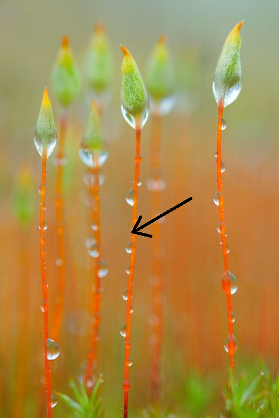

plant dictionary
back home
these are my own personal definitions! they are far from universal
- plant
- any organism in the clade embryophyta. basically, a very long time ago some green algae started growing on land. plants are them, and all of their descendants, even ones that don't photosynthesize. and i don't count other photosynthesizers as plants, even, like, lichens and seaweed
- gametophyte
- the generation of plants that produces gametes. these gametes then combine to form the zygote of the sporophyte. these are often haploid (1 set of chromosomes), but they always have half the dna of the sporophyte
- sporophyte
- the generation of plants that produces spores. these spores then germinate asexually, into new gametophytes. these are often diploid (2 sets of chromosomes), but they always have twice the dna of the gametophyte
- alternating generations
- the name for the whole setup of plants and some other organisms, where you have differences between even and odd generations

- stem
- an organ in the sporophyte that is either this structure, or any modified version of it:
- 
- the vast majority of most modern plants is composed of stem
- it can also be any structure in the gametophyte of plants that has evolved primarily to transport nutrients, not photosynthesize or reproduce
- leaf
- a plant organ that evolved a long time ago to be flat and photosynthesize, and any modified form of it, even if it isn't flat and doesn't photosynthesize. leaves have evolved around 4 times in my view
- megaphyll
- a leaf that is a stem, or collection of stems. the vast majority of modern leaves are megaphylls
- root
- a stem that has evolved to penetrate soil and collect nutrients, and any modified form of it
- phylloclade
- the precursor to a megaphyll, a stem that fairly recently evolved to fill the role of a leaf. it cannot be derived from a root in my view. i also don't count these as leaves